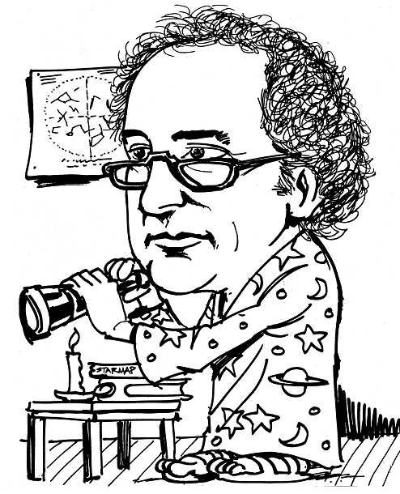

Expository Programming
Vector 22:3, page 65

Well, quite simply, meeting Ken Iverson changed my life. I’d been a psychologist, but after I met Ken and Adin Falkoff in 1966, I knew what I’d rather do, and I’ve worked in computing ever since, though I think I’ve retained a psychologist’s sympathy for the human user.When I joined IBM, the company was enthusiastic about the prospects for using computers in primary and secondary schools. Iverson too believed that the language he was devising could play a huge role in education; but the vision Ken had was quite different from what was imagined by most of IBM and by most teachers and administrators in the ed biz. Iverson firmly believed that his contribution, and the contribution of his APL language, was notation; a way of writing clearly about mathematics and about mathematical models. Ken conceived of APL first – first – as a medium for humans to read, write and understand; a language for papers or blackboards, or the backs of envelopes. And then, in 1966, Iverson’s language became directly executable by machine. Thanks, Larry.
With it, students would be able to read, write or discuss an algorithm and then, with minimal effort, type it at a machine, see its output, trace its execution, experiment with alternative arguments, try out alternative definitions.There was an office of internal education at Yorktown Heights, which routinely asked instructors to describe what they proposed to teach by referring to a list of identified topics and skills. But when I was asked to teach there, they didn’t seem to have anything that corresponded to Ken’s vision of programming. So we added to the list a description of “didactic programming”. It was probably not the best name, but that’s what we called it. Didactic programming is the art of writing a program that is both executable by machine, and makes clear to a human reader what it does and how it works.*
Now this was altogether different from the thrust of the then burgeoning movement of computer-assisted instruction. CAI, of which there was a large group at IBM then, sought to develop programs that would run autonomously, and that by their behaviour, would give the students experiences that would cause them to learn. The student was not supposed to run the program, and especially not supposed to look inside to see what it did or how it did it. To describe the quite different way he thought computers should be used, Ken coined the phrase ‘open use’ of the computer. One of the papers we wrote at that time was called “Using the computer to compute”, which you’d think was a silly title, except that it was not what everybody in CAI was doing.
When IBM Italy sent us three researchers to Yorktown Heights, to study CAI, Ken successfully hijacked their mission and they became our collaborators not in CAI, but in what they came to call l‘uso aperto del elaboratore, or something like that. (Forgive my Italian.)
Ken made a great many appearances at schools and universities, to explain how he thought students could and should make use of computers, and in particular, how they could start right away, using APL. At some of these guest experiences, I got to serve as his assistant, and I felt a bit like Robin getting to carry Batman’s bag. But listening to Ken give those demonstrations, I marvelled at the spontaneous and natural way he seemed to talk. Especially I loved the way he deftly handled questions from the audience. He seemed endlessly able to respond to their queries with neat examples and appropriate jokes. Only after I had listened to these presentations many times, did I begin to catch on to how he did this. He carried around in his head a huge fund of examples, jokes, aphorisms, stories, but he kept them in reserve. He didn’t offer them. He waited until a listener’s question happened to set up one of them, and then he sprang it forth. It sounded just like something he’d thought of that instant in response to what the questioner had asked.
Well, people weren’t going to believe it was possible to write a program whose listing is itself a readable explanation until there were some examples of the genre. So, when Iverson was made an IBM Fellow, IBM provided him funding to work on projects of his own choosing. Instead of building a staff of his own, he used his budget to bring in visiting teachers and professors from a range of disciplines. The idea was to get them started writing APL programs that would serve as explanations in their respective fields. He hoped they’d keep going when they returned to their home institutions after they’d spent two or three months with him. And indeed, a great number of them did. My job became looking for lower-level introductory examples of that sort of thing. Ken encouraged me to collaborate with John Thorstensen, a graduate student in astronomy, on a program called STARMAP. The idea was to explain the movement of the stars and planets across the sky and to do it by writing programs that clearly stated the simple formulas that described their motion. Well, we did this, it ran, we printed it, but people largely didn’t get the point that we were trying to make. The program got wide distribution, but not as a way to show students the formulas of planetary motion; instead, IBM gave it lots of publicity as a way for journalists to tell people where in the sky to look for the comet Kohoutec, which didn’t actually ever show up, and which we had not even planned, when we were writing this program, to include. But there was worse. When we asked for approval to publish this example of didactic programming we got back from the publications review committee a message that said, “Permission denied. This paper discloses proprietary algorithms that are the intellectual property of IBM.” I sent in an appeal saying, as diplomatically as I could, Don’t be silly. This is an APL restatement of Kepler’s function from about 1610. But then we got a new rejection. This time it said, “Permission denied. This is not original work.”
Ken believed passionately that brevity is essential to clarity. “Be concise!” he’d say. For me, this made for endless tension. In my role as populariser, or explainer, I never got over my belief that, in English, readability is mostly redundancy. Ken would look at what I’d drafted and say, “Long-winded. You can cut out two thirds.”
He didn’t just admire reduction to a few words; he also wanted those few words in a small space. He was very proud of his APL vade mecum, an entire APL reference no bigger than a credit card.
Well, as you all know, very early in the development of APL, its enthusiasts found it was so powerful that very often they could express an entire process in a single statement. There were soon contests to see who could find a one-line version of an algorithm previously thought to require many. Sometimes this improved clarity. Sometimes it had the opposite effect, and brevity trumped readability. By readable, I mean that you feel comfortable reading it, not just that you are able eventually to trace out what it says. Whether a very concise statement is readable depends very much on your background and experience. The same expression that delights the old-timer can mystify, appal and repel a novice. Sadly, I have to say that enthusiasts of APL, and of its later reincarnation as J, have continued to storm magnificent new heights but they no longer try very much to address novices. They have left behind the masses that we once sought to address.
So, if I try to sum up, I’d celebrate my personal delight at having been able to be part of this marvellous project and at the same time my pain that there’s still a lot left that wasn’t achieved, a lot left to do.
A few years ago I went to a computer convention at Moscone Center in San Francisco. From the head of the escalator I looked down into the eager, busy crowds. People of all ages were excitedly swarming to examine the newest products and hear the latest words of Steve Jobs. I was stabbed with a sad realisation that this was how I thought it was going to be for APL. I had been fired up by Ken Iverson’s dream that he would produce something to revolutionise computing not just for a minority of devotees and experts but for all the rest of us as well. That part hasn’t really happened yet.
*A subsequent check in the old files shows that we actually called it ‘expository programming’ rather than ‘didactic programming.’